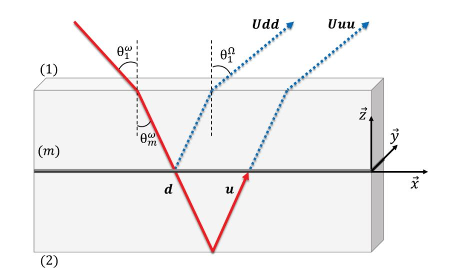

7. SSHG analysis¶
Once the spectrum analysis for all the angles has been performed, see ref:polarisation_procedure_page, several observables can be extracted from the angle-dependent intensity data. Many possible analyses can be made depending on what you are looking for. We are detailing here the analysis commonly used in the ONLI team of ILM.

But, if you have developed your own code that extracts some observable from the intensity in function of the polarisation angle, please do not hesitate to contact us so that this code can be added in Alpaga!
The sshg_module of Alpaga is designed to extract susceptibility tensor coefficient \(\chi\) from polarisation resolved SSHG experiments on a isotropic and achirale interface. For that, we extract these coefficients by fitting our experimental data with the theoretical equations ( !!!REF!!!) :
Where \(\gamma\) is the incoming polarization angle and {S, P} are the output polarization angles.
7.1. \(a_i\) coefficients¶
{kind=link}
In order to extract the \(\chi\) coefficients, we first need a value of the ai coefficients. They are calculated from the three layer models [1], where an ‘interfacial’ layer produces the S-SHG signal. These ai coefficients contains the Fresnel transmission and reflexion coefficients at the different interfaces. In order to calculate them, we only need refractive indexes of the two bulk media at fundamental and harmonic frequencies, and the angle of incidence between the laser beam and the interface interface.
- sshg_module.ai_coeff(angle1, n1, n2, N1, N2)[source]
From experimental angle of incidence and refractive index values of materials for fundamental and harmonic wavelength, this function return ai coefficients and the angle of the harmonic reflected wave. You can see Aurèlie Bruyere Thesis, p70 to 81, for details of the calculation.
- Parameters
angle1 (float) – experimental angle of incidence
n1 (float) – refractive index of medium 1 for fundamental wavelength
n2 (float) – refractive index of medium 2 for fundamental wavelength
N1 (float) – refractive index of medium 1 for harmonic wavelength
N2 (float) – refractive index of medium 2 for harmonic wavelength
- Returns
ai – It contains value of ai coefficients and the angle of the harmonic reflected wave. Structure of the list :
[a1, a2, a3, a4, a5, reflected angle of reflected wave]
- Return type
list
7.2. Theoretical equation for SSHG intensities¶
Once the ai coefficients are calculated, one can calculate the intensity curves from some chi coefficients..
- sshg_module.fit_polaS(x, chi_XXZ, ai)[source]
It’s the function that defines the theoritical equation for S polarisation.
- Parameters
x (list) – The polarisation angle of the fundamental in degree. The angle shall be given in degrees!
chi_XXZ (float) – The value of chi_XXZ element
ai (list) – List of the ai elements with the same structure as the return of sshg_module.ai_coeff.
- Returns
y – The S polarised SSHG intensity
- Return type
list
And :
- sshg_module.fit_polaP(x, chi_XXZ, chi_ZXX, chi_ZZZ, ai)[source]
It’s the function that defines the theoritical equation for P polarisation.
- Parameters
x (list) – The polarisation angle of the fundamental in degree. The angle shall be given in degrees!
chi_XXZ (float) – The value of chi_XXZ element
chi_ZXX (float) – The value of chi_ZXX element
chi_ZZZ (float) – The value of chi_ZZZ element
ai (list) – List of the ai elements with the same structure as the return of sshg_module.ai_coeff.
- Returns
y – The P polarised SSHG intensity
- Return type
list
It also exists sshg_module.fit_pola45 function if you want to analyse some experiments with the outlet polarization angle fixed at 45°. These two functions are not the ones that make the fitting. They just describe how the theoritical equation evolve with the \(\gamma\) angle.
{kind=link}
7.3. Fitting procedure to obtain Chi coefficients¶
The previous functions for \(a_i\) and theoretical intensities are combined in a single function which allow to extract \(\chi\) coefficients from experimental data. This function uses the datas and experimental parameters (such as medium refractive indexes and incidence angle of the fundamental beam) and, by fitting, returns the chi coefficients and ai.
It’s also important to note that with these equation there is two possible sets of coefficient that differs only for chi coefficient signs which are equivalent. We can distinguish the physical set by looking at the 45° polarisation.
- sshg_module.analyse_polarization_SSHG(angle_incidence, n1_fonda, n2_fonda, n1_harmo, n2_harmo, L_angle_deg, L_intensity_S, L_intensity_P, XXZ=False)[source]
From experimental angle of incidence, refractive index values of materials for fundamental and harmonic wavelength, polarisation angle and the SSHG gaussian intensity, the function returns ai coefficients and chi coefficients for an isotrope achiral interface. ref : Aurèlie Bruyere Thesis, p70 to 81
- Parameters
angle1 (float) – experimental angle of incidence
n1 (float) – refractive index of medium 1 for fundamntal wavelength
n2 (float) – refractive index of medium 2 for fundamntal wavelength
N1 (float) – refractive index of medium 1 for harmonic wavelength
N2 (float) – refractive index of medium 2 for harmonic wavelength
L_angle (list) – The polarisation angle of the fundamental in degree.
L_intensity_S (list) – The SSHG intensity for S polarized analyser. The size of L_angle and L_intensity_S shall match.
L_intensity_P (list) – The SSHG intensity for P polarized analyser. The size of L_angle and L_intensity_P shall match.
XXZ (float) – This parameter allows you to fix the value of chi_xxz if, for exemple, your S polarisation is flat. It avoid fitting the noise and recover a non physical value for this element. By default, the value is set to ‘False’ : in this case chi_xxz is extracted by the fitting of S polarisation.
- Returns
ai (list) – It contains value of ai coefficients and the angle of the harmonic reflected wave. Structure of the list :
[a1, a2, a3, a4, a5, reflected angle of reflected wave]
list_chi (list) – It contains two mathematical solutions for coefficient chi. Structure of the list :
[chi_XXZ, chi_ZXX, chi_ZZZ,
chi_XXZset2, chi_ZXXset2, chi_ZZset2]
A tuto is written to show how to use the module, how to plot the fit results and see the influence of the choice of the set of \(\chi\) coefficients over the 45° polarisation.
- Release
1.1
- Date
Aug 19, 2025